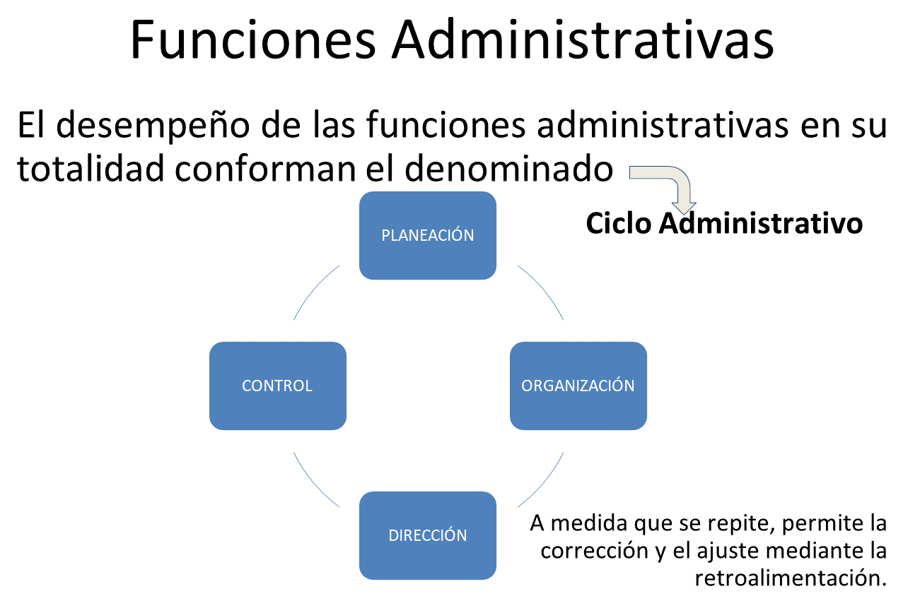
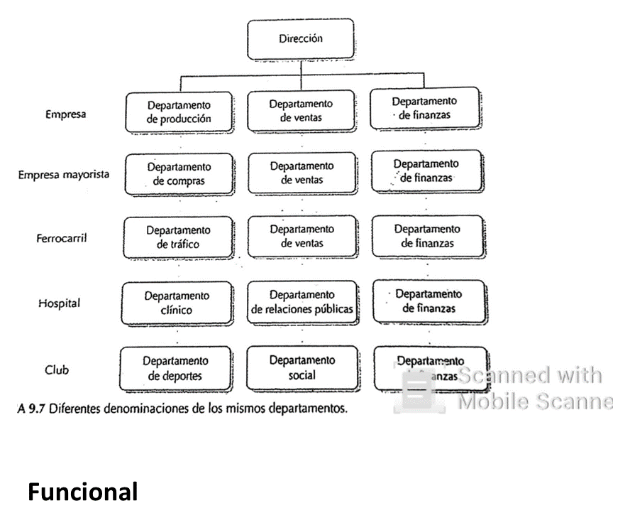
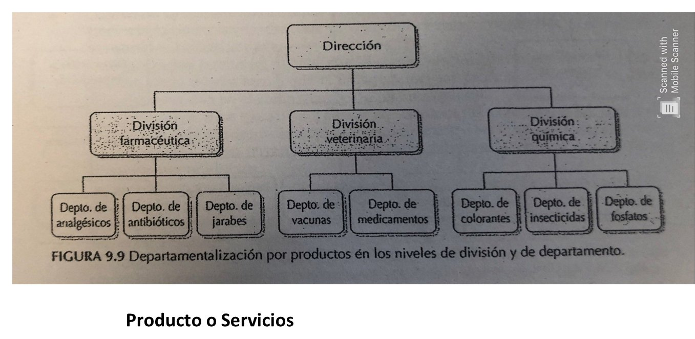
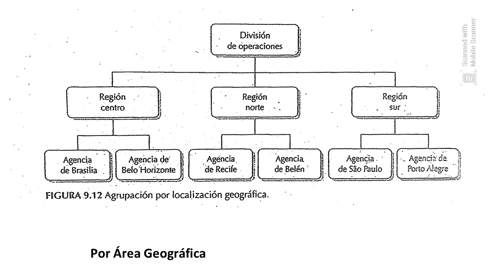
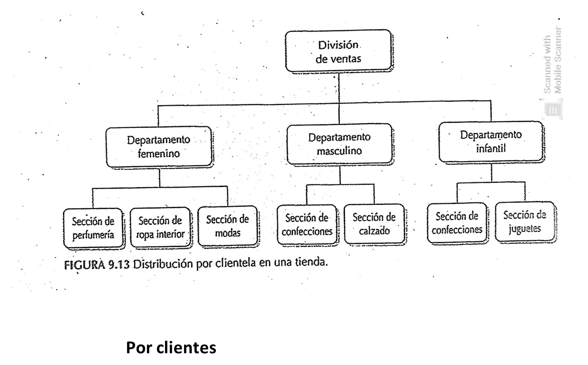
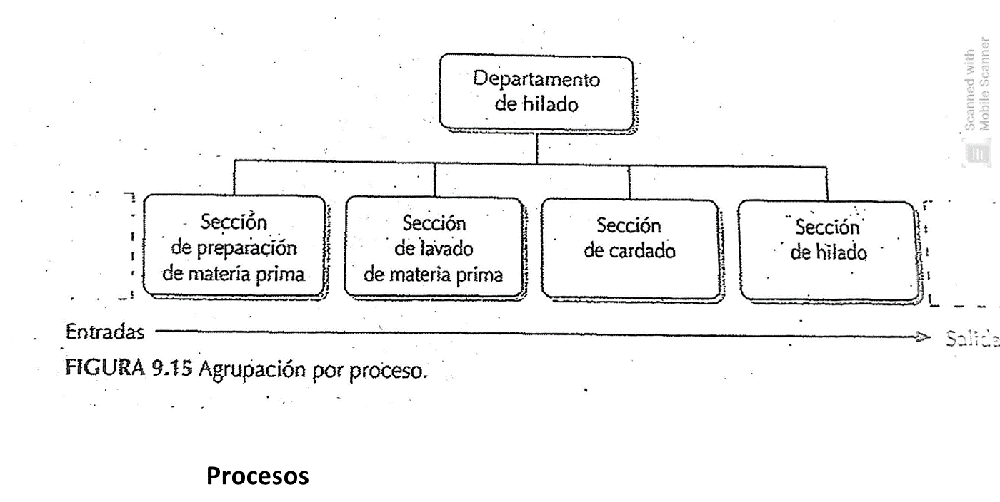
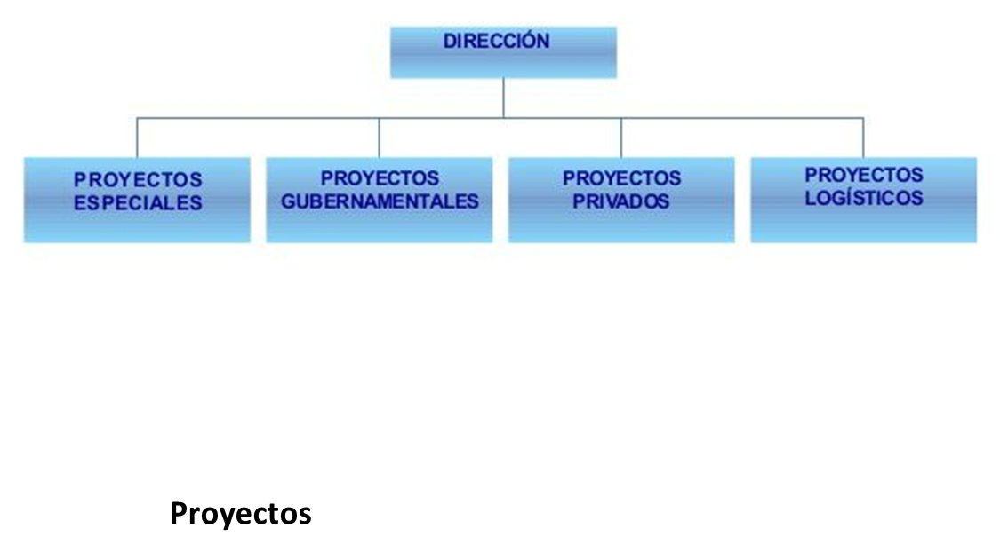
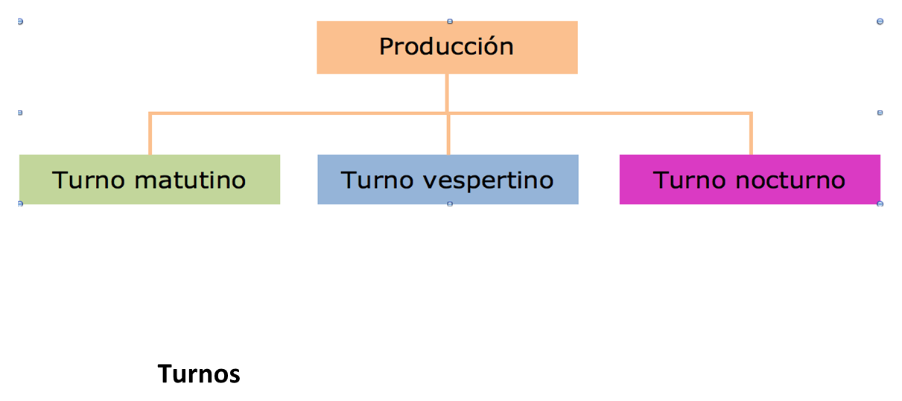
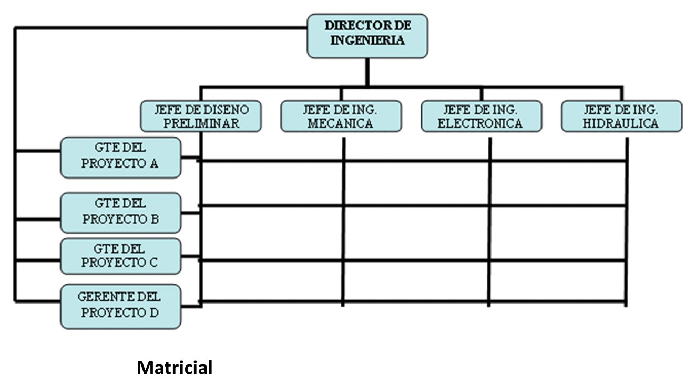

UCES 2026 · cátedra Brugnoli / Rudaz. El final es oral y sólo teórico. Guía en pantallas: una unidad por vez, con el guion para decirla en voz alta.
Es oral y sólo teórico: no hay ejercicios de punto de equilibrio para resolver, pero sí hay que explicar el concepto y para qué sirve.
Cada pantalla es una unidad. Avanzá con la flecha → de arriba, con el botón Siguiente del final, o con las flechas del teclado. La página se acuerda de dónde quedaste, así que podés cerrarla y volver.
Las seis unidades del programa oficial 2026 están desarrolladas en el orden en que conviene decirlas: definición → para qué sirve → clasificación o componentes → ejemplo propio. Los cuadros 🗣 Cómo lo decís son el guion hablado, y cada unidad cierra con su propio quiz para no seguir de largo sin haber fijado lo que acabás de leer. Después vienen las pantallas de apoyo: banco de preguntas, flashcards, quiz, mapa y estrategia del oral.
Los badges marcan el peso de cada tema: Imprescindible cae casi seguro · Importante muy probable · Complementario es de apoyo.
Todo lo que sigue está armado sobre el material de la cátedra Brugnoli / Rudaz, unidad por unidad, con la terminología de esos textos:
Cuando veas un bloque de cita como el de abajo, es texto transcripto del material, sin retoques — ésa es la definición que conviene decir con esas palabras. Lo demás es explicación, ejemplos y guiones para hablar.
“Administración es el proceso de planear, organizar, dirigir y controlar el uso de los recursos para lograr los objetivos.”
Apunte Concepto de administración (Unidad 1), tomado de Chiavenato. Así se ve una cita textual en esta guía.Una pantalla, seis unidades: la definición que abre cada respuesta y las distinciones que el tribunal repregunta. Si algo de acá no te suena, andá a esa unidad; el resto ya lo tenés.
Unidad 1 · Fundamentos Imprescindible
Unidad 2 · La organización Imprescindible
Unidad 3 · Estructuras Imprescindible · la unidad más pesada
Unidad 4 · Producción Imprescindible
Unidad 5 · Aprovisionamiento Imprescindible
Unidad 6 · Recursos Humanos Imprescindible
Definición con las palabras de la cátedra → para qué sirve → la clasificación o los pasos → un ejemplo propio. Si podés cerrar enganchando con otra unidad, mejor.
Qué es administrar, si es ciencia o técnica, el ciclo administrativo y la evolución de las escuelas. Es la unidad que más se pregunta.
Concepto y propósito Imprescindible: administrar es interpretar los objetivos de la organización y transformarlos en acción a través de cuatro funciones — planear, organizar, dirigir y controlar — para alcanzarlos de la mejor manera con los recursos disponibles.
Eficacia vs. eficiencia: la eficacia (o efectividad) es lograr los objetivos; la eficiencia es lograrlos con el mínimo de recursos. Se puede ser eficaz sin ser eficiente (llegás al objetivo pero gastando de más). Productividad = salidas / insumos en un período, considerando la calidad.
¿Ciencia, técnica o arte? Imprescindible · pregunta textual del programa
El proceso o ciclo administrativo Imprescindible: es un ciclo, no una lista — el control retroalimenta la planeación y todo vuelve a empezar.
| Función | Qué es | Contenido clave |
|---|---|---|
| Planeación | Decidir hoy qué hacer en el futuro: definir objetivos y los planes para alcanzarlos | 3 niveles: estratégica (largo plazo, toda la empresa, nivel institucional) · táctica (mediano plazo, por departamento, nivel intermedio) · operacional (corto plazo, cada tarea). 4 clases de planes: procedimientos (métodos) · presupuestos (dinero) · programas (tiempo) · normas o reglamentos (comportamientos). |
| Organización | Dividir el trabajo, agrupar actividades, designar personas y asignar recursos | Puede ser formal (la del organigrama, planeada) o informal (la que surge espontáneamente). |
| Dirección | Poner en marcha la empresa a través de las personas | Comunicar, liderar y motivar. Autoridad y poder: de recompensa, coercitivo, legitimado, de referencia y del experto. |
| Control | Verificar que lo hecho coincida con lo planeado | 4 fases: establecer estándares → observar el desempeño → comparar contra el estándar → aplicar acción correctiva. |

"Administrar es interpretar los objetivos de la organización y transformarlos en acción mediante cuatro funciones: planear, organizar, dirigir y controlar. Es un ciclo: el control detecta los desvíos y esa información vuelve a la planeación. Por ejemplo, en una pizzería: planeo abrir una sucursal y armo el presupuesto; organizo quién cocina y quién reparte; dirijo motivando al equipo; y controlo si vendimos lo previsto y si la pizza sale en veinte minutos. Si hay desvíos, corrijo y el ciclo arranca de nuevo."
El alcance de cada función Imprescindible · se dio en clase como cuadro. Cada una de las cuatro funciones se despliega en tres niveles — institucional, intermedio y operacional — y la cátedra lo presenta siempre en forma de cuadro. Es el punto que separa “nombrar las funciones” de explicarlas: si te piden detalle, la respuesta sale de acá.
1 · Alcance de la planificación. Empieza por establecer los objetivos y después define los planes para alcanzarlos; minimiza la incertidumbre y da consistencia al desempeño.
| Planificación | Contenido | Extensión en el tiempo | Amplitud |
|---|---|---|---|
| Estratégica | Genérico, sintético y amplio | Largo plazo | Macroorientada: enfoca la empresa como totalidad |
| Táctica | Menos genérico y más detallado | Mediano plazo | Enfoca cada unidad de la empresa por separado |
| Operacional | Detallado, específico y analítico | Corto plazo | Microorientada: enfoca sólo cada tarea u operación |
Las cuatro clases de planes (es el resultado inmediato de la planeación: un curso de acción predeterminado para un período):
| Se relacionan con… | Plan | Contenido |
|---|---|---|
| los métodos | Procedimientos | Métodos de trabajo o de ejecución. Se representan con flujogramas |
| el dinero | Presupuestos | Ingresos y gastos en un determinado período |
| el tiempo | Programas o programaciones | Correlación entre el tiempo y las actividades: cronogramas, agendas |
| los comportamientos | Normas o reglamentos | Cómo deben comportarse las personas en determinadas situaciones |
2 · Alcance de la organización. Sus componentes son cuatro: tareas, personas, órganos y relaciones. Y su alcance cambia según el nivel:
| Alcance | Tipo de diseño | Contenido | Resultante |
|---|---|---|---|
| Nivel institucional | Diseño organizacional | La empresa como totalidad | Tipos de relación formal (lineal, funcional, staff) |
| Nivel intermedio | Diseño departamental | Cada departamento por separado | Tipos de departamentalización |
| Nivel operacional | Diseño de cargos y tareas | Cada tarea, o apenas una tarea | Análisis y descripción de cargos |
Porque enlaza tres unidades en una sola respuesta: el nivel institucional lleva a las relaciones formales de la Unidad 3, el intermedio a la departamentalización de la Unidad 3, y el operacional al análisis y descripción de puestos de la Unidad 6. Decir eso muestra que estudiaste la materia entera y no seis unidades sueltas.
3 · Alcance de la dirección. Dirigir es poner a funcionar la organización: orientar, ayudar a la ejecución, comunicar, liderar y motivar. También baja por los tres niveles, y en cada uno cambia el nombre del que dirige:
| Nivel de la organización | Nivel de dirección | Cargos implicados | Cobertura |
|---|---|---|---|
| Institucional | Dirección | Directores y altos ejecutivos | La empresa, o áreas de la empresa |
| Intermedio | Gerencia | Gerentes y personal de mandos medios | Cada departamento o unidad |
| Operacional | Supervisión | Supervisores y encargados | Cada grupo de personas o de tareas |
4 · Alcance del control. El control guía la actividad hacia los objetivos predeterminados y tiene cuatro fases —establecer estándares → observar el desempeño → comparar con el estándar → acción correctiva—. Lo que suele faltar en la respuesta son los cuatro tipos de estándares: de cantidad (unidades producidas, cantidad de personal), de calidad (control de calidad del producto, especificaciones), de tiempo (tiempo estándar de producción, plazos) y de costo (costo de producción, costo de ventas). Y también baja por los tres niveles: control estratégico, táctico y operacional.
Autoridad y poder · los cinco tipos de poder Imprescindible · la cátedra lo remarcó en clase. Va dentro de la función Dirección, y la primera parte de la respuesta es la distinción:
| Autoridad | Poder |
|---|---|
| Es el derecho formal de un jefe a exigir que un subordinado realice una tarea. Viene del cargo, está en el organigrama y se delega. Es institucional e impersonal: si la persona deja el puesto, deja la autoridad. | Es la capacidad real de influir en la conducta de otros. Viene de la persona tanto como del cargo, no aparece en el organigrama y no se delega: se ejerce. Por eso alguien sin autoridad formal puede tener mucho poder — es el líder informal de la Unidad 3. |
Los cinco tipos de poder (French y Raven, que es como se dieron en clase):
| Tipo | De dónde sale | Ejemplo para decir |
|---|---|---|
| De recompensa | De la capacidad de dar algo valorado: un aumento, un ascenso, un premio, un reconocimiento. | El gerente que decide quién cobra el bono de fin de año. |
| Coercitivo | De la capacidad de castigar: sancionar, descontar, despedir. Es el reverso del anterior. | El supervisor que puede aplicar una suspensión. |
| Legítimo (legitimado) | Del cargo que se ocupa en la estructura: es el poder que coincide con la autoridad formal. | El jefe de sección da una orden y se cumple porque es el jefe. |
| De referencia | Del carisma y la identificación: los demás lo siguen porque quieren parecerse a él o lo admiran. | El compañero al que todos consultan aunque no sea jefe de nadie. |
| Del experto | Del conocimiento o la habilidad técnica que los demás necesitan. | El único que sabe operar el sistema: aunque esté abajo en el organigrama, todos dependen de él. |
"Autoridad y poder no son lo mismo. La autoridad es el derecho formal que da el cargo — está en el organigrama y se delega. El poder es la capacidad real de influir en la conducta de otros, y puede existir sin autoridad: el caso típico es el líder informal que descubrió Elton Mayo. French y Raven distinguen cinco tipos: de recompensa, cuando puedo dar algo valorado; coercitivo, cuando puedo castigar; legítimo, el que da el cargo; de referencia, el del carisma, que hace que me sigan porque quieren parecerse a mí; y del experto, el del conocimiento — que es el que puede tener el técnico que sabe operar el sistema aunque esté abajo en la estructura. Los dos primeros dependen del puesto; los dos últimos dependen de la persona, y son los que sostienen el liderazgo cuando la autoridad formal no alcanza."
Evolución del pensamiento administrativo: las escuelas Imprescindible · el tema más pedido del programa. No hace falta recitar las seis con fechas: hace falta poder decir qué problema vino a resolver cada una y en qué se diferencia de la anterior.
Leelo como una cadena de reclamos, no como una lista. Cada escuela nace para resolver el problema que tenía la empresa de su época. Al resolverlo deja algo afuera, y ese "algo afuera" es exactamente el problema del que se ocupa la escuela siguiente. Dos avisos que evitan la confusión típica: las escuelas se superponen en el tiempo (Weber es contemporáneo de los neoclásicos, no posterior), y ninguna reemplaza a la anterior — se van sumando capas.
“No se trata simplemente de hacer historia de la administración, sino de analizar los avances conceptuales que en cada momento representaron verdaderas revoluciones en la forma de conducir las organizaciones.”
“Cada escuela administrativa surge entonces para responder a los problemas predominantes en un determinado contexto histórico.”
Hermida, citado en el apunte de cátedra Unidad 1 · Evolución del Pensamiento Administrativo (2026), puntos 1 y 2. Es la frase con la que conviene abrir el tema en el oral."El pensamiento administrativo evoluciona por crítica a la escuela anterior. Arranca con la clásica, Taylor y Fayol: el problema era producir más, y la respuesta fue la eficiencia — Taylor en el taller con tiempos y movimientos, Fayol en la dirección con las áreas y los principios. Su límite es que suponen un hombre económico, movido sólo por dinero. Contra eso reacciona Relaciones Humanas: Mayo, en Hawthorne, muestra que pesan más el grupo y el reconocimiento que las condiciones físicas; aparece el hombre social. Pero se va al otro extremo y descuida la estructura, así que la neoclásica vuelve a Fayol con el organigrama y el manual de funciones, y Weber aporta la burocracia: normas, jerarquía y autoridad legal para dar previsibilidad. El costo es la rigidez. Ahí entran la psicología y la sociología industrial —Maslow, McGregor— con el hombre complejo y las teorías X e Y, aunque sin método de aplicación. Y finalmente la teoría de los sistemas integra todas las miradas: la organización como un sistema de partes conectadas dentro de otro mayor. Desde los setenta, la administración estratégica corre el foco al entorno. Y la conclusión: ninguna escuela reemplaza a la anterior, las empresas de hoy combinan elementos de todas."
La misma historia en el tiempo Complementario, para ubicar cuándo pasó cada cosa y ver el péndulo de un vistazo:
El Cuadro Comparativo Final del apunte Imprescindible · textual — cuatro columnas: problema central · concepción del hombre · aporte · limitación. Va tal como está en el material, con sus palabras, porque es el guion que la cátedra espera escuchar. Ojo con dos cosas: Fayol figura como fila aparte de la clásica, y la neoclásica no entra en este cuadro (viene de Hermida, no del apunte 2026). Si te tomás cinco minutos para memorizar algo de esta unidad, que sea esto:
| Escuela | Problema central | Concepción del hombre | Aporte | Limitación |
|---|---|---|---|---|
| Clásica | Baja productividad | Hombre económico | Eficiencia científica | Mecanización humana |
| Fayol | Falta de dirección sistemática | Sujeto jerárquico | Proceso administrativo | Rigidez estructural |
| Relaciones Humanas | Desmotivación | Hombre social | Grupo informal | Exceso de armonía |
| Burocrática | Orden y estabilidad | Individuo regido por norma | Autoridad racional | Formalismo excesivo |
| Psicológica | Comprender motivación | Hombre complejo | Teorías motivacionales | Dificultad estructural |
| Teoría de Sistemas | Organización como sistema abierto | Social y basado en las relaciones | Integración de las distintas perspectivas y ciencias | Alta abstracción |
Fuente: apunte de cátedra Unidad 1 · Evolución del Pensamiento Administrativo (2026), “Cuadro Comparativo Final” (p. 9). Transcripto sin cambios.
“La evolución del pensamiento administrativo no implica el reemplazo total de una escuela por otra. Cada enfoque aporta herramientas para comprender diferentes dimensiones de las organizaciones: la escuela clásica aporta eficiencia productiva, las relaciones humanas introducen la dimensión social, la burocracia aporta estabilidad institucional, la escuela psicológica profundiza la motivación y el liderazgo, y la teoría de sistemas integra las distintas perspectivas. Las organizaciones actuales combinan elementos de todos estos enfoques.”
Apunte de cátedra 2026, “Conclusión Integrada” (p. 9-10). Con esto se cierra la respuesta — es la conclusión que el apunte deja escrita.La ficha de cada escuela Para consultar, no para memorizar — acá está el detalle por si te repreguntan referentes, fechas o aportes puntuales:
| Escuela | Referentes | Idea central | Su límite |
|---|---|---|---|
| Clásica · Adm. Científica 1841-1925 | Taylor, Gantt, Gilbreth | Foco en la fábrica y el operario: eficiencia vía estudio de tiempos y movimientos, selección y entrenamiento científico, pago por rendimiento. Nace de combatir el “soldiering” — el obrero que baja el ritmo a propósito para que no le suban la exigencia. Resultados que da la cátedra: la productividad aumenta entre un 40% y un 300%, la jornada baja entre media hora y una hora, y la remuneración sube entre un 50% y un 100%. | Mecanicista: el hombre económico, holgazán por naturaleza y motivado sólo por dinero. |
| Clásica · Adm. Industrial y General 1841-1925 | Fayol | Foco en la dirección y la estructura. Gobernar = prever, organizar, dirigir, coordinar y controlar, y divide la empresa en seis funciones o áreas: técnicas, comerciales, financieras, de seguridad, de contabilidad y administrativas. Crea el manual de funciones y formula 14 principios. | Textual de la clase: “considera la autoridad de derecho divino y desconoce el papel del líder” y “considera al individuo como una constante”. O sea: principios universales y rígidos. |
| Relaciones Humanas 1925-1935 | Elton Mayo | Hawthorne (1927-32): cambiaban la iluminación y la productividad subía igual → pesan más las condiciones sociopsicológicas que las físicas. Aparecen los grupos informales y el líder. | Sobrevalora lo informal y descuida la estructura. |
| Neoclásica 1925-1945 | Gulick, Urwick, Koontz, O’Donnell | Retoma a Taylor y Fayol en la guerra y la posguerra. Amplían las cinco funciones de Fayol a siete: planificación, organización, formación del plantel, dirección, coordinación, rendición de cuentas y confección del presupuesto. Herramientas: organigrama, manual de funciones y el esquema ACME de departamentalización. | Parte de las mismas premisas clásicas: formalismo, sin variables de conducta. |
| Estructuralista · Burocrática 1910-1950 | Weber, Merton, Gouldner | Modelo burocrático: normas escritas estrictas, jerarquía clara, cargos despersonalizados y temporales, autoridad legal-racional (el poder viene de la norma, no de la persona). Busca previsibilidad. Merton agrega las funciones manifiestas (conocidas) y latentes (ocultas). | Rigidez: sirve al Estado, universidades y fuerzas armadas; es lento para la empresa privada. |
| Psicología y Sociología industrial 1935-1950 | Lewin, Maslow, McGregor, Likert | Motivación, personalidad y dinámica de grupo. Teoría X (hay que controlar) vs. Teoría Y (hay que delegar). Estilos de liderazgo: autoritario, democrático y permisivo (laissez-faire) — y el democrático es el que mejor responde. También los tres modelos de participación: nula, amplia y relativa. | Actuaron sólo en la dimensión informal: teorías sin metodología de aplicación. |
| Teoría de los Sistemas 1950-1970 | Von Bertalanffy, Kast, Boulding | Enfoque que cruza todas las ciencias: la organización es un sistema de partes (subsistemas) interconectadas en busca de un objetivo, y siempre está dentro de otro sistema mayor. Aporta input, output, feedback, entropía, caja negra. | Muy general: describe pero no prescribe. |
| Administración estratégica 1970 en adelante | — | Es la que cierra la línea de tiempo que se dio en clase. Ya no busca la mejor forma de organizar hacia adentro, sino posicionar a la organización frente a un entorno cambiante. | Alcanza con ubicarla y decir de qué se ocupa. |
Quiz de la Unidad 1 Antes de seguir Tocá una opción y te dice al toque si está bien o mal, con la explicación. Si fallás una, volvé al tema de arriba antes de pasar a la Unidad 2.
Aciertos: 0 / 0 respondidas (0 en total)
Qué es una organización, sus tres características, por qué es un sistema abierto y cómo se lee el entorno.
Concepto y características Imprescindible: las organizaciones son unidades sociales deliberadamente construidas o reconstruidas para alcanzar fines específicos. Un club, un hospital, Mercado Libre o la UCES: todas lo son. Se caracterizan por tres rasgos:
Tipos de organización Imprescindible · es el punto 2 del programa. Ojo, porque acá no se responde “lineal, funcional y staff” — eso es Unidad 3. Lo que la cátedra dio en clase son cuatro criterios de clasificación:
| Según… | Tipos |
|---|---|
| el origen de su capital | Nacional · extranjera · mixta |
| la composición del capital | Pública · privada · mixta |
| sus objetivos | Con fines de lucro · sin fines de lucro |
| su sistema de autoridad | Autoritarias · participativas |
Un ejemplo que sirve para las cuatro: la UCES es de capital nacional, privada, con fines de lucro; un hospital público es nacional, público, sin fines de lucro; y una ONG, privada y sin fines de lucro.
La organización como sistema abierto Imprescindible: funciona como un sistema de entrada → proceso → salida, con retroalimentación. Recibe entradas del entorno (materias primas, capital, información, personas), las transforma y devuelve salidas (productos y servicios).
Es abierto porque está en intercambio permanente con el entorno: lo influye y es influido por él. Y es un sistema sociotécnico, con un subsistema técnico (máquinas, tecnología, procesos), uno administrativo (estructura, dirección, decisiones) y uno social (personas, motivaciones, cultura). El todo es superior a la suma de las partes.
"La organización es un sistema abierto porque intercambia permanentemente con su entorno. Pensemos en una hamburguesería: entran la carne y el pan de los proveedores, más la mano de obra y el capital; eso es el proceso de conversión, la cocina; y sale la hamburguesa al cliente. Lo que el cliente opina vuelve como retroalimentación y ajusta la receta. Si fuera un sistema cerrado no se enteraría de que cambió el gusto del consumidor, y quedaría afuera del mercado."
El entorno: macroentorno y microentorno Imprescindible · fue el 50% del parcial 2025. El entorno es el conjunto de elementos externos pertinentes y relevantes para la organización. Se divide en dos grupos:
| Microentorno · acción directa (inmediato) | Macroentorno · acción indirecta (mediato) |
|---|---|
| Componentes o actores cuya influencia es inmediata. Son comunes a todo tipo de organización, más o menos controlables y de comportamiento predecible, y la organización puede negociar con ellos: clientes · proveedores · competidores · sistema financiero (bancos) · sindicatos · el sector económico al que pertenece · todo grupo de referencia que ejerza presión inmediata. | Componentes cuya influencia es mediata. Son fuerzas impersonales, específicas de cada organización, no controlables, actúan con máxima incertidumbre y no son predecibles — el apunte los llama “verdaderos agujeros negros estratégicos”: factores económicos (inflación, tipo de cambio, PIB) · político-legales (regulaciones, leyes, gobiernos) · sociales (demografía, tendencias) · culturales (valores, costumbres, estilo de vida) · tecnológicos (nuevos procesos, automatización). |
El ejercicio típico (te lo pueden plantear de palabra): te dan una frase de un artículo y tenés que decir qué variable es. "El turismo representa el 11% del PIB" → económica · "el Ayuntamiento declara ilegales las viviendas turísticas" → político-legal · "pintadas de tourist go home" → social / cultural · "faltan redes de carga para autos eléctricos" → tecnológica · "trabajamos con el sindicato Smata" → sindicatos, acción directa.
Incertidumbre del entorno Complementario: Duncan la analiza cruzando el grado de cambio (estático / dinámico) con la complejidad (simple / complejo). Dinámico y complejo = máxima incertidumbre (la industria bancaria); estático y simple = mínima (la industria de contenedores).
Quiz de la Unidad 2 Antes de seguir Ojo con la pregunta de "tipos de organización" y con clasificar frases en micro o macroentorno: son las dos cosas que más se cobran de esta unidad.
Aciertos: 0 / 0 respondidas (0 en total)
La unidad más larga: principios de estructura, delegación, tipos de organización, departamentalización y centralización.
Diseño organizacional y organización formal e informal Imprescindible
Principios de las estructuras orgánicas Imprescindible. En clase se dieron cuatro, y son sólo estos cuatro — si enumerás de más, se nota que estás recitando el libro:
Del libro, no se dio en clase La división del trabajo vertical (más niveles jerárquicos) y horizontal (más órganos en el mismo nivel: eso es la departamentalización), y el tramo de control como forma de la estructura —amplio → achatada, estrecho → alargada— están en Chiavenato y sirven si te repreguntan, pero no son de los cuatro principios. No los ofrezcas primero.
Delegación Imprescindible: el proceso por el cual un jefe transfiere parte de su trabajo a un subordinado. Implica cuatro pasos:
Para delegar bien hacen falta ciertas actitudes personales: receptividad (aceptar y saber usar las ideas ajenas), disposición a delegar (ceder autoridad de verdad, no “desprenderse” a medias), disposición a tolerar los errores ajenos, disposición a confiar en los subordinados y —la quinta, que agrega Koontz— disposición a establecer y usar controles amplios, porque sin controles el jefe no delega por miedo a perder el dominio.
Tipos de organización y relaciones formales Imprescindible. La clave es que cada tipo se define por cómo circula la autoridad.
| Tipo | Características | Ventajas | Desventajas |
|---|---|---|---|
| Lineal (la más antigua: ejército e Iglesia) | Autoridad lineal o única (unidad de mando) · líneas formales de comunicación · centralización de las decisiones · formato piramidal. | Sencilla, responsabilidades bien delimitadas, fácil de implantar, estable. Ideal para empresas chicas o que arrancan. | Rígida e inflexible; el jefe se vuelve generalista y cuello de botella; las comunicaciones se congestionan al crecer; no favorece la especialización. |
| Funcional (Taylor) | Autoridad funcional o dividida, basada en la especialización y no en la jerarquía · líneas directas de comunicación · descentralización hacia los especialistas · énfasis en la especialización. | Máxima especialización, mejor supervisión técnica, comunicación directa sin intermediarios. | Se pierde la unidad de mando (subordinación múltiple), confusión sobre quién manda, competencia entre especialistas. |
| Línea-staff (la más usada hoy) | Fusiona las dos anteriores. Los órganos de línea deciden y ejecutan las actividades básicas (producir, vender); los de staff asesoran, recomiendan y prestan servicios especializados. | Combina la claridad de mando de la lineal con la especialización de la funcional. | El conflicto línea-staff (desarrollado abajo) · el costo elevado de la asesoría · el asesor no carga con la responsabilidad de la ejecución. |
Las tres relaciones formales (esta es la pregunta que aparece en el programa, punto 3 de la Unidad III):
Las 4 funciones del staff: servicios · consultoría y asesoría · monitoreo · planeación y control. Ejemplos: asesoría legal, auditoría, consultoría.
Decir “el especialista propone y el de línea resiste” no explica nada. El conflicto tiene tres causas concretas, y con dos que digas alcanza:
"La línea-staff es la más usada porque combina lo mejor de las dos anteriores, pero trae un conflicto propio. El de staff es un especialista que trabaja desde el conocimiento técnico; el de línea es un generalista que decide desde la experiencia. Además, el asesor recomienda pero no ejecuta, así que no responde por el resultado: si sale mal, la culpa recae sobre el gerente que ejecutó, y termina en que uno dice que el plan estaba mal y el otro que se ejecutó mal. A eso se suma que la asesoría tiene un costo elevado. Por eso el conflicto es estructural, no una cuestión de personas."
Departamentalización Imprescindible · punto 4 del programa: es la especialización horizontal de la organización — el desdoblamiento de órganos en el mismo nivel jerárquico —, y consiste en agrupar actividades homogéneas en departamentos. Un departamento es un área, división o segmento sobre el cual un administrador tiene autoridad para desempeñar actividades específicas. Sus objetivos: aprovechar la especialización · facilitar el control · dar atención adecuada a cada actividad · reconocer las condiciones locales · reducir gastos.
De dónde viene Si te preguntás en qué momento de la materia aparece: es el resultado del nivel intermedio del alcance de la organización (Unidad 1) — el diseño departamental. Ahí se elige qué departamentos hacen falta; acá se ve con qué criterio se arman.
| Criterio | Cómo agrupa | Ejemplo |
|---|---|---|
| Por funciones | Por la naturaleza de la actividad. La más común. | Producción · Comercialización · Finanzas · Personal |
| Por productos | Una división por línea de producto | División farmacéutica, veterinaria y química |
| Geográfica o por territorio | Por zona | Región norte, centro y sur de un banco o supermercado |
| Por clientela | Por tipo de cliente | Departamento femenino, masculino e infantil; banca empresarial vs. individuos |
| Por proceso | Por fases del proceso productivo | Secciones de hilado, lavado y cardado en una textil |
| Por tiempo está en el programa | Por turnos, cuando la actividad no puede parar | Turnos de mañana, tarde y noche en un hospital, una guardia o una planta de proceso continuo |
| Por proyectos | Estructura temporal alrededor de cada proyecto | Astilleros, constructoras; al terminar la obra el equipo se disuelve |
| Matricial | Combina funcional + proyectos: doble jefe | Cada persona responde a un gerente funcional Y a un gerente de proyecto |
Cómo se ve cada criterio en un organigrama Diapositivas de la cátedra · clase 5 — son los mismos dibujos que se proyectaron en clase (Chiavenato, cap. 9). Si en el oral podés describir el dibujo, ya explicaste el criterio. Tocá cualquiera para abrirla en grande:








Ventajas y desventajas está en el programa. En general, departamentalizar permite especializar, aprovechar economías de escala y controlar mejor cada área, pero genera compartimentos estancos. Por tipo, así se dio en clase — cada ventaja tiene su desventaja simétrica:
| Tipo | Ventaja | Desventaja |
|---|---|---|
| Funcional | Especialistas por jefatura | Poca cooperación interdepartamental |
| Productos o servicios | Facilita evaluar los resultados | Coordinación en detrimento de la especialización |
| Geográfica | Gran adaptación a las condiciones locales | Disminuye la coordinación del conjunto |
| Clientela | Organización destinada a satisfacer al cliente | Vuelve secundarias las demás actividades |
| Proceso | Mejor arreglo físico y uso racional de los recursos | Falta de flexibilidad ante los cambios |
| Proyectos | Orientada al resultado, gran flexibilidad | Concentra personas y recursos sólo de forma provisional |
| Tiempo / turnos | Favorece el control por turno específico | Inconvenientes en la asignación de responsabilidades |
| Matricial | Orientada al resultado final y mantiene la especialización | Conflictos de autoridad, posible desunión del comando |
Los cuatro principios para elegir el criterio: del mayor uso (la actividad la maneja quien más la usa) · del mayor interés (la supervisa quien más interés tiene en ella) · de separación del control (las actividades de control se separan de las controladas: Control de Calidad no debe depender de Producción) · de supresión de la competencia (agrupar en un mismo departamento las actividades que rivalizan entre sí).
Centralización y descentralización Imprescindible · cayó en el parcial 2026: centralizar es la tendencia a concentrar la autoridad para decidir en una persona o un grupo reducido — no hay delegación; descentralizar es distribuir esa autoridad hacia abajo — hay delegación. Ninguna es mejor en abstracto: depende de los factores determinantes.
| Centralización | Descentralización | |
|---|---|---|
| Ventajas | Decisiones uniformes y coherentes · aprovecha a los especialistas de la cúpula · control más estricto · evita duplicaciones. | Decisiones más rápidas y cercanas al problema · quien decide conoce mejor la situación · desarrolla y motiva a los mandos medios · alivia a la alta dirección. |
| Desventajas | Lentitud · quienes deciden están lejos de los hechos · genera cuello de botella y desmotiva a los mandos medios. | Riesgo de falta de uniformidad · más difícil de controlar · exige gerentes capacitados · puede duplicar esfuerzos. |
Los factores determinantes — el apunte de la cátedra (Koontz) enumera once. Piden mencionar al menos tres y explicarlos, así que llevá los primeros cuatro firmes y el resto para nombrar al pasar:
También existe la recentralización: recuperar autoridad que antes se había delegado.
"Centralizar es concentrar las decisiones arriba y descentralizar es delegarlas hacia abajo. No hay una mejor: depende de factores. Te doy tres. Primero, el costo de la decisión: cuanto más cara y difícil de revertir, más se centraliza, porque un error se paga caro. Segundo, el tamaño: una organización grande y dispersa no puede esperar que todo lo resuelva la cúpula, así que descentraliza. Y tercero, la disponibilidad de gerentes capacitados: podés querer descentralizar, pero si no tenés gente formada para decidir, no podés — y ahí la solución previa es capacitar."
Quiz de la Unidad 3 Antes de seguir Es la unidad más pesada y la que más preguntas tiene acá. Prestá atención a las tres relaciones formales, a qué se delega y a los factores de centralización.
Aciertos: 0 / 0 respondidas (0 en total)
La función producción, sus decisiones, la localización y el layout, y el punto de equilibrio — que acá se explica, no se calcula.
Concepto y objetivos Imprescindible: producción es la transformación o conversión de insumos en productos, bienes o servicios. Funciona como sistema: entradas (materias primas, mano de obra, energía, capital, información) → proceso de conversión → salidas (productos y servicios), con un subsistema de control por retroalimentación.
Los cuatro objetivos con que se mide su desempeño (Solana): costo (el total de erogaciones para obtener el producto) · calidad (la medida en que el producto satisface las necesidades del cliente) · flexibilidad (cómo se adapta a los requerimientos cambiantes de la demanda) · entrega (aptitud para llegar al consumidor en el momento y lugar adecuados).
Los tres niveles de decisiones Importante. Lo que las separa es el horizonte temporal y qué deciden: las estratégicas diseñan el sistema, las tácticas lo hacen funcionar y las logísticas lo sostienen.
| Nivel | En una frase | Decisiones |
|---|---|---|
| Estratégicas largo plazo | "Cómo va a ser el sistema" | Producto · proceso y métodos · equipo · tecnología · disposición de planta (layout) · capacidad y dimensión · localización · estructura de la dirección de producción |
| Tácticas mediano plazo | "Cómo lo hago funcionar" | Planeamiento de la producción e inventarios · programación (de acá sale el programa de producción, que el programa de la materia pide por su nombre: qué se produce, en qué cantidad y en qué momento) · lanzamiento y monitorización · conducción de la fuerza de trabajo |
| Logísticas corto plazo | "Cómo lo sostengo" | Mantenimiento · abastecimiento · expedición · manejo de materiales · administración del personal de producción · servicios de planta |
El esquema secuencial de la estrategia de producción así se dio en clase: las decisiones estratégicas se toman en un orden, y ése es el guion para explicar “la gestión de producción”.
| 1 · Producto | 2 · Proceso | 3 · Planta |
|---|---|---|
| Diseño del producto: forma, color, tamaño, calidad, confiabilidad. Factores a definir: funcional, valor, calidad de diseño, apariencia, durabilidad y seguridad. | Diseño del proceso: si la actividad será de equipamiento intensivo o de mano de obra intensiva. Incluye la determinación de tiempos estándares (por cronometraje), el layout y el tipo de producción. | Dimensión: se define la capacidad instalada y la integración vertical — tomar el control de proveedores (hacia atrás) o de clientes (hacia adelante). Localización: dónde se instala. |
Tipos de producción Imprescindible: se clasifican según la continuidad del flujo.
Localización de planta y layout Imprescindible · está explícito en el programa
Localización: es la decisión de dónde instalar la planta. Es una decisión estratégica, de largo plazo y muy costosa de revertir: tiende a minimizar el flujo de egresos a largo plazo. Sus factores condicionantes:
Layout o disposición de planta: es cómo se distribuyen físicamente las máquinas, los puestos y los materiales dentro de la planta. Tres tipos:
Punto de equilibrio: concepto, tipos e importancia Imprescindible. En el final no te van a hacer calcular, pero sí explicar qué es, cuáles son los tres tipos y para qué sirve.
Concepto: el punto de equilibrio es el nivel de actividad en el que los ingresos totales igualan a los costos totales: no se gana ni se pierde. Por encima hay ganancia, por debajo pérdida.
“El Punto de Equilibrio es aquel punto de actividad en el cual los ingresos totales son exactamente equivalentes a los costos totales asociados con la venta o elaboración de un producto. Es decir, es aquel punto de actividad en el cual no existe utilidad, ni pérdida (la empresa no gana dinero, pero tampoco pierde).”
Material de cátedra, Teoría Punto de Equilibrio (Unidad 4), p. 1. Ésta es la definición para arrancar la respuesta; después venís con el gráfico y la fórmula.Las variables: costos fijos (no varían con el volumen: alquiler, sueldos generales) · costos variables (dependen del volumen: materia prima, comisiones) · costo variable unitario · precio de venta · margen o contribución marginal = precio − costo variable unitario, que es lo que aporta cada unidad para cubrir los fijos.
La fórmula base: \(Q_e = \dfrac{CF}{Pv - CVu}\) — costos fijos dividido la contribución marginal. En valores, \(PE(\$)=Q_e \cdot Pv\).
Los tres tipos (todos usan el mismo margen de contribución en el denominador; lo único que cambia es el numerador):
El material los distingue por el lucro que persigue cada uno, y es la forma más corta de decirlos: contable → Lucro = Cero · financiero → Lucro = Cero − Depreciación · económico → Lucro = Cero + Remuneración del Capital Propio.
Fuente de las tres fórmulas y de esas tres igualdades: material de cátedra Tipos de Puntos de equilibrio (Unidad 4), transcripto textual.
Su importancia en la toma de decisiones y el planeamiento — esto es lo que más se pregunta en un oral: permite saber cuánto hay que vender como mínimo para no perder, cuánto para alcanzar una ganancia objetivo, evaluar el impacto de un cambio de precio o de costos, decidir si conviene lanzar un producto, y medir el margen de seguridad (cuánto pueden caer las ventas antes de entrar en pérdida). En clase se agregaron dos usos más, que conviene decir porque no son los obvios: determinar la viabilidad de un proyecto y ayudar a decidir si conviene pasar un costo variable a fijo (por ejemplo, cambiar comisiones por sueldo fijo: baja el costo variable unitario, sube el margen de contribución y sube el punto de equilibrio).
Quiz de la Unidad 4 Antes de seguir Acordate de que en el oral el punto de equilibrio se explica, no se calcula: lo que se pregunta es el concepto, los tres tipos y qué le pasa si se mueve un dato.
Aciertos: 0 / 0 respondidas (0 en total)
El ciclo de abastecimiento y los cuatro conceptos que pide el programa: stock mínimo, stock de seguridad, punto de pedido y lote óptimo.
Concepto, objetivos y subfunciones Imprescindible: el abastecimiento es la función logística que se ocupa de proveer a la organización de los materiales e insumos que necesita, en la cantidad, calidad, momento y costo adecuados. Comprende tres subfunciones que forman un ciclo:
La frase con la que la cátedra abre la unidad: el aprovisionamiento existe para equilibrar los distintos ritmos de las actividades de la organización — el de las ventas con el de la producción, y el de la producción con el de las compras.
Si piden las actividades concretas del abastecimiento, alcanza con cuatro o cinco de estas: manejo de los almacenes de materias primas · control de existencias y detección de la necesidad de comprar · estudio del mercado proveedor · planeamiento y ejecución de las compras · seguimiento de las compras en curso · manejo y control del tráfico de los bienes · evaluación del desempeño de los proveedores · recepción (control e ingreso) · liquidación de rezagos · registración y archivo de la información.
La gestión del aprovisionamiento: los cuatro conceptos que pide el programa Imprescindible
| Concepto | Definición |
|---|---|
| Stock mínimo | La cantidad mínima que debe haber en depósito sin que se produzcan rupturas de stock — es decir, para que la producción no se detenga. En clase se dio con las cuatro condiciones en las que conviene trabajar con stock mínimo: los costos de almacenamiento son elevados · la demanda es estable (poco riesgo de ruptura) · los proveedores son de confianza · se esperan bajas en los precios. |
| Stock máximo se dio en clase, junto al mínimo | La cantidad de existencias que se pueden mantener en el almacén en función de los costos que hay que soportar. Conviene cuando: los costos de almacén son bajos · se obtienen descuentos por volumen · se espera un incremento de la demanda · se esperan subas fuertes en el precio de los materiales. Es el espejo exacto del mínimo, y por eso se preguntan juntos. |
| Stock de seguridad | Una reserva adicional para cubrir imprevistos: demoras del proveedor o un consumo mayor al previsto. Es el colchón contra la incertidumbre. |
| Punto de pedido | El nivel de existencias que dispara una nueva orden de compra. Se fija de modo que, durante el tiempo que tarda el proveedor en entregar (el lapso de reaprovisionamiento), el stock alcance sin caer por debajo del de seguridad. |
| Lote óptimo | La cantidad a pedir en cada compra que minimiza el costo total, entendido como la suma de dos costos contrapuestos: el costo de ordenamiento (hacer y gestionar cada pedido, que baja si pido lotes grandes) y el costo de mantener existencias (almacenar, financiar y arriesgar obsolescencia, que sube si pido lotes grandes). Gráficamente, es el punto donde se cruzan ambas curvas. |
"El lote óptimo resuelve una tensión: si compro de a mucho, hago pocos pedidos y me ahorro el costo de ordenar, pero tengo mucho capital inmovilizado en el depósito y corro riesgo de obsolescencia. Si compro de a poco, tengo poco stock pero estoy haciendo pedidos todo el tiempo, con el costo administrativo que eso implica. El lote óptimo es la cantidad que minimiza la suma de los dos costos. Y el punto de pedido es distinto: no es cuánto pedir sino cuándo — el nivel de stock en el que disparo la orden, calculado para que me alcance mientras el proveedor entrega."
Las otras funciones logísticas Importante, porque suelen preguntarse enganchadas con abastecimiento:
Calidad Importante: hay dos conceptos que no hay que mezclar — calidad de diseño (grado de coincidencia entre lo que el cliente necesita y lo que se diseñó) y calidad de concordancia (coincidencia entre lo que se elaboró y lo que se había diseñado). El control puede ser por variable (se mide: peso, largo, tolerancias) o por atributo (pasa / no pasa), y se aplica sobre entradas, procesos o salidas. La calidad total (Juran) extiende la responsabilidad por la calidad a toda la organización, con clientes y proveedores internos. Regla: es mejor prevenir que curar.
Quiz de la Unidad 5 Antes de seguir La trampa de siempre: lote óptimo es CUÁNTO pido y punto de pedido es CUÁNDO. Si esa la tenés firme, la unidad está.
Aciertos: 0 / 0 respondidas (0 en total)
Análisis de puestos, dotación, capacitación, evaluación de desempeño, remuneraciones y motivación.
Concepto y funciones Imprescindible: la administración de personal comprende los conceptos y técnicas necesarios para desempeñar adecuadamente lo relacionado con el personal. Busca el equilibrio entre los objetivos de la organización y los de las personas.
Sus nueve funciones (según la cátedra): 1) análisis de puestos · 2) reclutamiento · 3) selección de candidatos · 4) inducción y capacitación · 5) administración de sueldos y salarios · 6) ofrecimiento de incentivos y beneficios · 7) evaluación de desempeño · 8) comunicación interpersonal · 9) desarrollo de gerentes.
Análisis de puestos Imprescindible: un puesto es una posición en la estructura organizacional que conlleva ciertas funciones y responsabilidades que la identifican y la distinguen de las restantes. El análisis de puestos genera dos productos — y la pregunta es siempre la diferencia entre ellos:
Sirve de base para reclutar, seleccionar, remunerar y evaluar. De ahí sale también la valuación de puestos: la técnica que jerarquiza los cargos para fijar una remuneración equitativa, o sea que el sueldo guarde relación con la importancia del puesto.
Reclutamiento, selección e inducción Imprescindible
Capacitación y desarrollo Imprescindible: la distinción que cae seguro.
El ciclo de entrenamiento: inventario de necesidades → elección de métodos y elaboración del programa → ejecución → evaluación y control de resultados, que retroalimenta el inventario inicial. La capacitación aporta en cuatro planos: informaciones, habilidades, actitudes y nivel conceptual.
Evaluación del desempeño Imprescindible · está explícita en el programa: tiene por objeto calificar al empleado en función de la eficiencia y la eficacia con que realiza sus funciones, comunicándole los resultados para que pueda orientar su accionar en lo sucesivo.
Los tres elementos que se evalúan:
Puede ser informal (el feedback cotidiano y espontáneo) o formal (periódica y con metodología). La formal tiene cuatro etapas: planeamiento (al inicio se define quién evalúa, con qué método y qué metas) → revisión intermedia → evaluación propiamente dicha → comunicación de los resultados, que es una devolución en diálogo. La clave: no debe haber sorpresas al final, porque las metas se fijaron al principio y hubo una revisión en el medio.
Remuneraciones y beneficios Importante: la remuneración se clasifica según de qué depende el pago — del tiempo (por mes: sueldos; por día o quincena: salarios) · del nivel de actividad (a destajo, por pieza) · del volumen de ventas (comisiones) · de las utilidades (participaciones y bonificaciones, a directores y gerentes). Se suman los beneficios indirectos (salud, vacaciones pagas, seguros, guardería) y las compensaciones no financieras (trato justo, horario flexible, progreso). Los montos se fijan combinando factores internos (jerarquía del puesto, mérito) y externos (mercado, poder adquisitivo), con tres herramientas: valuación de puestos, encuestas de remuneraciones e índices de precios.
Motivación Importante · está en los contenidos mínimos del plan: es lo que impulsa a una persona a actuar de determinada manera. Enfoques que hay que poder nombrar:
Seguridad, salubridad y relaciones laborales Complementario
Quiz de la Unidad 6 Cierre del programa Las distinciones que más se preguntan: descripción vs. especificación, reclutar vs. seleccionar, capacitación vs. desarrollo, acto vs. condición insegura.
Aciertos: 0 / 0 respondidas (0 en total)
Una pregunta por cada ítem numerado del programa, con la respuesta en una o dos líneas: lo mínimo que tenés que poder soltar sin pensar.
Salen del programa 2026 punto por punto: cada ítem numerado del programa es una pregunta posible. Acá está cada una con la respuesta en una o dos líneas — lo mínimo que tenés que poder soltar sin pensar. Si alguna te cuesta, el desarrollo largo está en Desarrollo por unidad.
Para entrenar el decirlo, que es lo que se evalúa en un oral. Tocá la tarjeta para darla vuelta.
Todas las preguntas de las seis unidades juntas, para chequear que las definiciones y las distinciones estén firmes antes de sentarte a rendir.
Aciertos: 0 / 0 respondidas (0 en total)
Las seis unidades de un vistazo, para ver cómo se conecta todo.
Cómo armar una respuesta, qué temas rinden más y qué hacer si te quedás en blanco.
La materia es muy enumerativa —tres características de esto, cuatro pasos de aquello— y la tentación es memorizar listas sueltas. El problema es que si te falta un ítem, se nota. Si en cambio arrancás con una definición firme y un ejemplo propio, el punto está ganado igual.